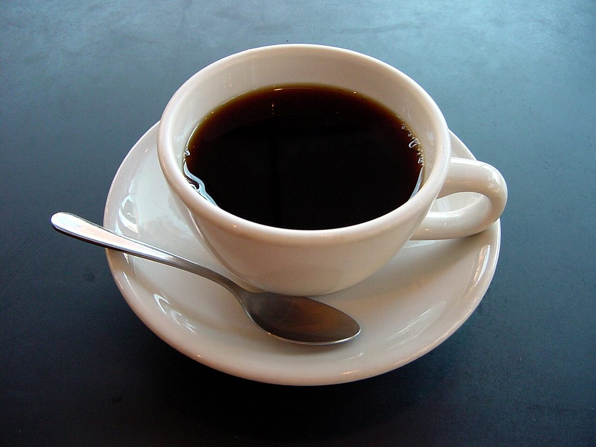
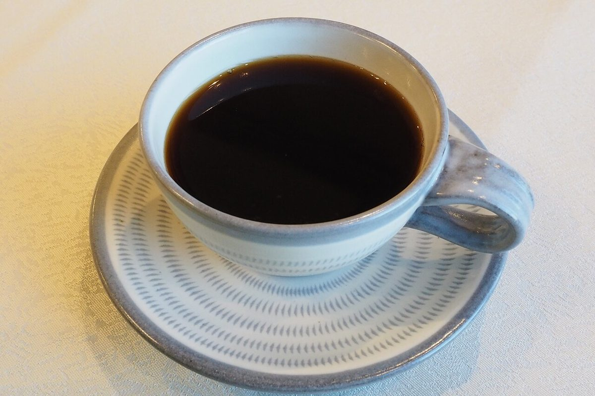
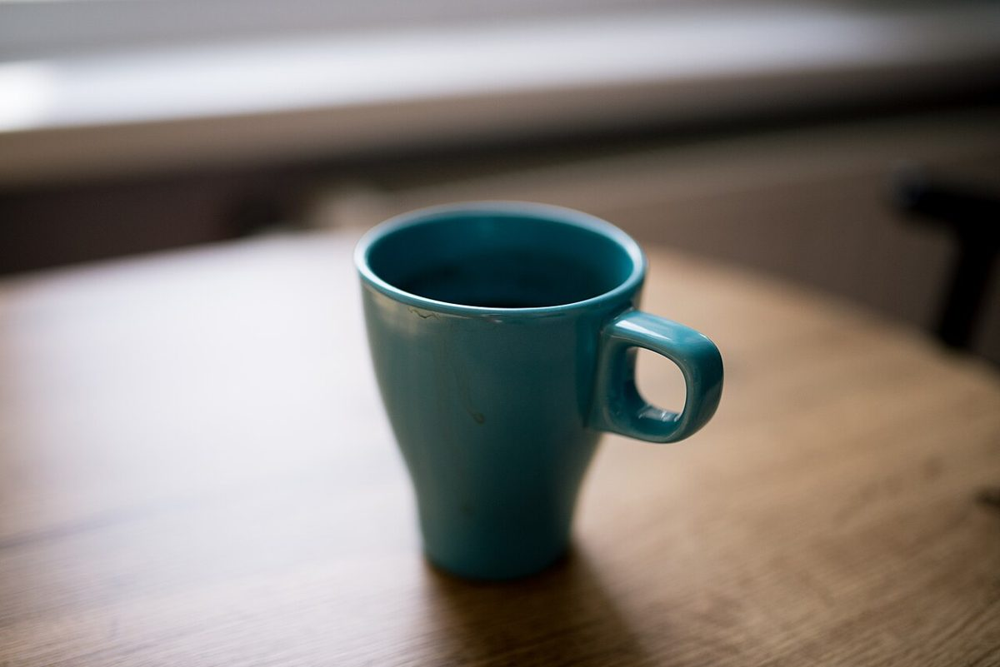

こもれび
カフェ / 北海道北広島市三島
カフェこもれびのご案内ページです。営業時間やメニューなど、詳しいことは準備中。分かっているのは所在地と電話番号、そしてInstagramのアカウントです。

制作側の連想
「こもれび」から、カップを一客ずつ注ぎ足す。
これは制作側の連想で、お店の理念・由来とは無関係です。屋号の由来は分かりません。制作側は「こもれび」という響きから、光がこぼれ落ちるように、器へ少しずつ満たされていく様子を思い浮かべました。そこでこのページは、小さなカップから大きなマグまで、容量の目安が違う五客を小さい順に並べる作りにしています。数字は一般的な容量の目安で、お店で使っている器や提供量を示すものではありません。
容量くらべの五客
- 60ml

エスプレッソ
ひとくちで飲みきれる、いちばん小さな一客。
- 100ml

デミタス
手のひらにおさまる、小ぶりな器。
- 160ml

コーヒーカップ
ソーサーとスプーンがそろう、ふつうの一客。
- 240ml

大ぶりのカップ
たっぷり注げる、ゆったりした一客。
- 360ml

マグ
いちばん大きい、五客めの器。
ご案内
お店のこと(確認できたものだけ)
| 所在地 | 〒061-1266 北海道北広島市三島61-4 |
|---|---|
| 電話 | 080-3232-0130 |
| 営業時間 | 準備中 |
| 定休日 | 準備中 |
| ご予約 | 準備中 |
| 駐車場 | 準備中 |
| SNS | Instagram @komo.rebi0508 |
営業時間・定休日・メニュー・価格・ご予約・駐車場は確認でき次第お知らせします。